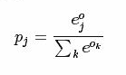
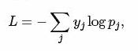

本文讲解一些其他的常用层，包括：Softmax_loss层，Inner Product层，Accuracy层，Reshape层和Dropout层及其它们的参数配置。
1.softmax-loss
softmax-loss层和softmax层计算大致是相同的。softmax是一个分类器，计算的是类别的概率(Likelihood)，是Logistic Regression的一种推广。Logistic Regression只能用于二分类，而softmax可以用于多分类。
softmax与softmax-loss的区别：
softmax计算公式：

而softmax-loss计算公式：

用户可能最终目的就是得到各个类别的概率似然值，这个时候就只需要一个softmax层，而不一定需要进行softmax-loss操作；或者是用户有通过其他什么方式已经得到了某种概率似然值，然后要做最大似然估计，此时则只需要后面的softmax-loss而不需要前面的softmax操作。因此提供两个不同的layer结构比只提供一个合在一起的softmax-loss layer要灵活许多。
不管是softmax layer还是softmax-loss layer，都是没有参数的，只是层类型不同而已。
softmax-loss layer: 输出loss值
layer {
name: "loss"
type: "SoftmaxWithLoss"
bottom: "ip1"
bottom: "label"
top: "loss"
}
softmax layer: 输出似然值
layer {
name: "prob"
type: "Softmax"
bottom: "cls3_fc"
top: "prob"
}
2.Inner Product
全连接层，把输入当作一个向量，输出也是一个简单向量(把输入数据的blob的width和height全变为1)。
输入：n*c0*h*w
输出：n*c1*1*1
全连接层实际上也是一种卷积层，只是它的卷积核大小和原始数据大小一致。因此它的参数基本和卷积层的参数一样。
层类型：InnerProduct
lr_mult: 学习率的系数，最终的学习率是这个数乘以solver.prototxt配置文件中的base_lr。如果有两个lr_mult，则第一个表示权值的学习率，第二个表示偏置项的学习率。一般偏置项的学习率是权值学习率的两倍。
必须设置的参数：
num_output: 过滤器(filter)的个数
其他参数：
weight_filter: 权值初始化。默认为"constant"，值全为0，很多时候我们用"xavier"算法来进行初始化，也可以设置"gaussian"
bias_filter: 偏置项的初始化。一般设置为"constant"，值全为0
bias_term: 是否开启偏置项，默认为true，开启
示例：
layer {
name: "ip1"
type: "InnerProduct"
bottom: "pool2"
top: "ip1"
param {
lr_mult: 1
}
param {
lr_mult: 2
}
inner_product_param {
num_output: 500
weight_filter {
type: "xavier"
}
bias_filter {
type: "constant"
}
}
}
3.accuracy
输出分类(预测)精确度，只有test阶段才有，因此需要加入include参数。
层类型：Accuracy
示例：
layer {
name: "accuracy"
type: "Accuracy"
bottom: "ip2"
bottom: "label"
top: "accuracy"
include {
phase: TEST
}
}
4.reshape
在不改变数据的情况下，改变输入的维度。
层类型：Reshape
先来看例子：
layer {
name: "reshape"
type: "Reshape"
bottom: "input"
top: "output"
reshape_param {
shape {
dim: 0 # copy the dimension from below
dim: 2
dim: 3
dim: -1 # infer it from the other dimensions
}
}
}
有一个可选的参数组shape，用于指定blob数据的各维的值(blob是一个四维的数据：n*c*w*h)。
dim: 0 表示维度不变，即输入和输出是相同的维度。
dim: 2 和 dim: 3 将原来的维度变成2或3。
dim: -1 表示由系统自动计算维度。数据的总量不变，系统会根据blob数据的其他三维来自动计算当前维的维度值。
假设原数据为：64*3*28*28，表示64张3通道的28*28的彩色图片。经过reshape变换：
reshape_param {
shape {
dim: 0
dim: 0
dim: 14
dim: -1
}
}
输出数据为64*3*14*56。
5.Dropout
Dropout是一个防止过拟合的trick。可以随机让网络某些隐含层节点的权重不工作。
先看例子：
layer {
name: "drop7"
type: "Dropout"
bottom: "fc7-conv"
top: "fc7-conv"
dropout_param {
dropout_ratio: 0.5
}
}
只需要设置一个dropout_ratio就可以了。
还有其他更多的层，但用的地方 不多，就不一一介绍了。
随着深度学习的深入，各种各样的新模型会不断出现，因此对应的各种新类型的层也在不断地出现。这些新出现的层，我们只有在等caffe更新到新版本后，再去慢慢地摸索了。